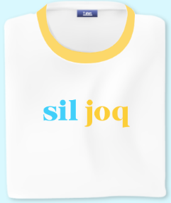
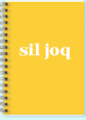
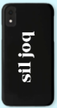

Camiseta Sil Joq:
Bonita camiseta blanca con
nuestro logo.
Tallas: XS, S, M, L y XL

Cuaderno Sil Joq:
Cuaderno de hojas cuadrículadas
y de los colores de nuestra marca
Tamaño del cuaderno: A4, A5 y A6

Funda de movil Sil Joq:
Funda de movil de varios colores.
Disponble solo para los siguientes modelos:
Poco F2, Poco F2 Pro, LG G3 y Mi Note 10